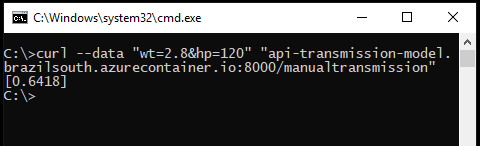

By Bruno Ferrari | April 22, 2020
Objective 1
Our goal here is to create a R Model and put-in into production by deploying it as web service API using Docker to containerize (encapsulate) it and Microsoft Azure to host it.
R Model
To create the model, we going to use mtcars dataset which one’s is present inside R.
head(mtcars)
## mpg cyl disp hp drat wt qsec vs am gear carb
## Mazda RX4 21.0 6 160 110 3.90 2.620 16.46 0 1 4 4
## Mazda RX4 Wag 21.0 6 160 110 3.90 2.875 17.02 0 1 4 4
## Datsun 710 22.8 4 108 93 3.85 2.320 18.61 1 1 4 1
## Hornet 4 Drive 21.4 6 258 110 3.08 3.215 19.44 1 0 3 1
## Hornet Sportabout 18.7 8 360 175 3.15 3.440 17.02 0 0 3 2
## Valiant 18.1 6 225 105 2.76 3.460 20.22 1 0 3 1The data was extracted from the 1974 Motor Trend US magazine, and comprises fuel consumption and 10 aspects of automobile design and performance for 32 automobiles (1973–74 models).
df_var
## Variable Description
## [1,] "mpg" "Miles/(US) gallon"
## [2,] "cyl" "Number of cylinders"
## [3,] "disp" "Displacement (cu.in.)"
## [4,] "hp" "Gross horsepower"
## [5,] "drat" "Rear axle ratio"
## [6,] "wt" "Weight (1000 lbs)"
## [7,] "qsec" "1/4 mile time"
## [8,] "vs" "Engine (0 = V-shaped, 1 = straight)"
## [9,] "am" "Transmission (0 = automatic, 1 = manual)"
## [10,] "gear" "Number of forward gears"
## [11,] "carb" "Number of carburetors"Creating the model
So in our model we going to use a logistic regression model to predict the probability of a vehicle being fitted with a manual transmission based on horsepower (hp) and weight (wt).
lr_transmission <- glm(formula = am ~ hp + wt, data = mtcars, family = binomial)Make some prediction with the model.
newdata <- data.frame(hp = 120, wt = 2.8)
predict(lr_transmission, newdata, type = "response")
## 1
## 0.6418125As we can see, the probability of a car with 120hp and weigh of 2800lbs being manual is 64.18%.
Now beforehand we need to save our R Model with a default format for future use.
saveRDS(lr_transmission, "transmission-model.rds")Making a model API
To make an API, we going to use the R package plumber, this package will transform the R code into a web services common language.
source("api.R", echo = TRUE, keep.source = T, max.deparse.length = 1000)
%
% > # api.R
% >
% > model <- readRDS("transmission-model.rds")
%
% > #* Plot a histogram of the manual transmission
% > #* @png
% > #* @get /plotam
% > plot_am <- function(){
% + barplot(table(mtcars$am))
% + }
%
% > #* Returns the probability whether the car has a manual transmission
% > #* @param hp Gross horsepower
% > #* @param wt Weight (1000 lbs)
% > #* @post /manualtransmission
% > model_predict <- function(hp, wt){
% + newdata <- data.frame(hp = as.numeric(hp), wt = as.numeric(wt))
% + predict(model, newdata, type = "response")
% + }Here at this code above, we define two functions to ours API, one is a classes plot of the target variable, whether a car has manual or automatic transmissions and the other is the function which we going to use to make predections.
To do a brief explanation how this annotations works, the api.R file defines two plumber “endpoints.”
One is hosted at the path /plotam and returns an image showing a simple R plot.
The first part #* tells plumber that this is a comment of what is this function, the second @png is what this functions will return and the third @get define the path and the function which will be used.
The other endpoints is hosted at the path /manualtransmission and makes ours predictions.
As in the first endpoint, we have a comment of what is this function, after that we use @param to specify the parameters which we going to use (hp and wt) and in the final we use @post to set the path and the function that we will use.
In a nutshell, to note some difference between @get and @post, @get will be used to when we ask for data from an API and @post when we need to send data to an API. If you want to understand more, at the plumber documentation you can see better how this annotations at theapi.R code properly works.
Ok, now we already have set how ours api will work, let’s check how this outputs are on R.
plot_am()
model_predict(120, 2.8)
## 1
## 0.6418125The plumber part is pretty easy, we need to pass the api.R file and which port we going to use. Here we going to use the port 8000.
library("plumber")
pr <- plumb("api.R")The pr object now encapsulates all the logic represented in your api.R file. The next step is to bring the API to life using the run() method:
pr$run(port = 8000)Now the API will be running locally in your R session until you press the ESC key. In your personal machine, you should be able to open http://localhost:8000/plotam in a web browser to test your new API endpoints.
To see the model endpoint you can use the curl command in terminal like that:
$ curl --data "wt=2.8&hp=120" "http://localhost:8000/manualtransmission"Host the model API
Finally we come to the main and the fun part, deploying the model as an API web service. To do that we going to use Docker and Microsoft Azure
From this point, we’re not going R anymore, insteed that, we going to use the terminal.
Make sure your terminal can running the docker and the azure CLI commands and their versions are updated.
You can download those from here.
Docker
https://www.docker.com/products/docker-desktop
Azure CLI
https://docs.microsoft.com/cli/azure/install-azure-cli
You also need to create a account on Microsoft Azure. You can have a free trial for 30-days on that.
Checking the commands:
Docker
Docker is a platform that allow you to run processes in an isolated environment, that environment might have certain resources/software pre-configured or may emulate a particular environment.
We will take advantage of the trestletech/plumber Docker image that bundles a recent version of R with the most recent version of plumber pre-installed. You can get this image with these command.
$ docker pull trestletech/plumberWe will start by just running a single Plumber application in Docker just to see things at work. By default, the trestletech/plumber image will take the first argument after the image name as the name of the file that you want to plumb() and serve on port 8000. So right away you can run one of the examples that is included in plumber as it is already installed on the image.
$ docker run --rm -p 8000:8000 trestletech/plumber /usr/local/lib/R/site-library/plumber/examples/04-mean-sum/plumber.Rdocker runtells Docker to run a new container;--rmtells Docker to clean-up after the container when it is done;-p 8000:8000says to map port 8000 from the plumber container (which is where we will run the server) to port 8000 of your local machine;trestletech/plumberis the name of the image we want to run;/usr/local/lib/R/site-library/plumber/examples/03-mean-sum/plumber.Ris the path inside of the Docker container to the Plumber file you want to host. You will note that you do not need plumber installed on your host machine for this to work, nor does the path /usr/local/… need to exist on your host machine. This references the path inside of the docker container where the R file you want toplumb()can be found. Thismean-sumpath is the default path that the image uses if you don’t specify one yourself.
This will ask Plumber to plumb and run the file you specified on port 8000 of that new container. Because you used the -p argument, port 8000 of your local machine will be forwarded into your container. You can test this by running this on the machine where Docker is running: $ curl localhost:8000/mean. You should get an single number in an array back [-0.1993].
We want to build upon trestletech/plumber image our own Docker image. For that we need to write an Dockerfile. Dockerfiles have a vast array of options and possible configurations, so see the official docs if you want to learn more about any of these options.
cat(Dockerfile)
FROM trestletech/plumber
COPY transmission-model.rds /transmission-model.rds
COPY api.R /plumber.R
CMD ["/plumber.R"] Those commands works as:
FROMinstruction initializes a new build stage and sets the base image for subsequent instructions;COPY–from=<name|index> instructions to refer to the image built in this stage. Here we are copying the file from our directory and put in container directory;CMDit customizes the default argument that will be used when running the image. In this case, you would be expected to mount a Plumber application into the container at /plumber.R
Now we can then build our custom Docker image from this Dockerfile using the command:
$ docker build -t myCustomDocker .Where . is the current directory where that Dockerfile is and myCustomDocker is where the Azure host will enter.
Azure
Here comes the time to host our API on the web so that anyone can access it. We will need to create and login to an account on Microsoft Azure.
Note: to create an account on Microsoft Azure although the 30-days free trial, is needed a credit card to complete the register.
To host the API we going to use a script which one can be download here. This script was made to run in a windows environment with git bash so if you are in a Linux or MacOS you probably need to edit these az.cmd commands to az.
In the script we have this parameters to pass:
subscriptionIdis related to azure account;resourceGroupNameis the name of the resource group which we going to host the APIresourceGroupLocationis the region where the resource group is - only needed if the resource group isn’t already created;aciDnsNameLabelthe first part of the web service link;acrNamethe name of the azure container registry. This where we going to substitute in themyCustomDocker.
The two last ones parameters we can set in the define part of the code, or in the script running.
The two first ones also could be set in the define part of the code, or in the script running but is better to set these in the define part because is also better create the RESOUCE GROUP beforehand.
So to make our life easier we going to login into https://portal.azure.com/#home to create a RESOUCE GROUP.
After login, to create that we need to go here:
Set the name and the region which we want - this name will be used in resourceGroupName
And finally we get this.
The number which appers in Subscription ID it is the number we are going to use in subscriptionId.
Now we going to run the script. Make sure all .R file, the Dockerfile and the script are in the same directory. If the script works properly we going to see this at final:

And the red links is our API web service !
On the web browser we can check the /plotam service on:
http://api-transmission-model.brazilsouth.azurecontainer.io:8000/plotam
Now to make predictions using our API we can use this command at terminal (wherever you are):
$ curl --data "wt=2.8&hp=120" "api-transmission-model.brazilsouth.azurecontainer.io:8000/manualtransmission"And you should get this:

Conclusions
We built a simple model API with R plumber package, containerized it with Docker, and deployed it to the web with Microsoft Azure. This makes ours models more collaborating with other developers and much more accessible. They only need to learn how to use your API to integrate your model into their applications and systems.